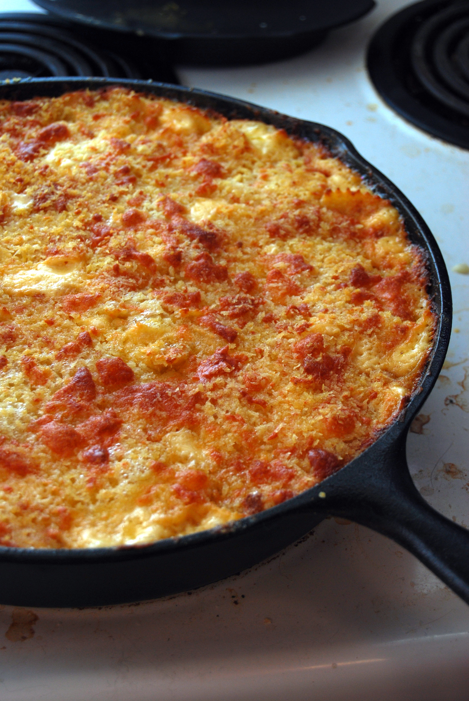

History
 The earliest recorded mac and cheese recipe dates all the way back to 1769 and most likely comes from Northern Europe. In America, we’ve been enjoying this staple thanks to Thomas Jefferson. After a trip to France, Jefferson just couldn’t part with all of the amazing pasta dishes in which he indulged. So, he brought back recipes (a version of mac and cheese included) to America to continue eating his favorite dishes. At his 1802 state dinner, with imported pastas and parmesan cheese, he even served macaroni and cheese (‘macaroni pie’) to his guests.